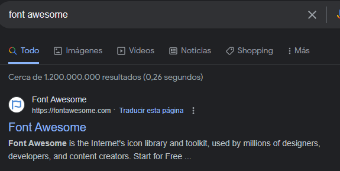
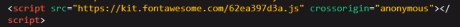
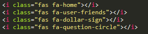
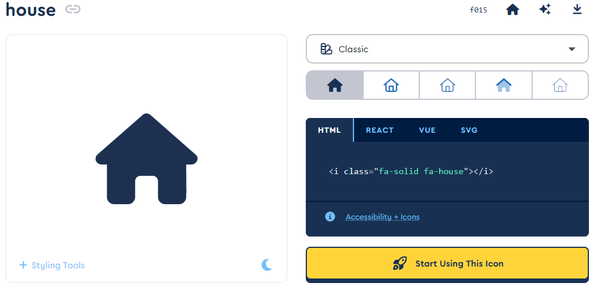

iconos
Para crear el menu responsive vamos a trabajar con la metodologia BEM donde le damos clases a cada link
Vamos a crear un icono descargado de la pagina font awesome aaaaa

Luego podemos crear nuestro logo pero en este caso yo utilizo el meta de soydalto para usarlo como icono.

Para poner iconos creamos un asi donde siempre se pone fas fa luego - y despues el nombre del icono asi.
icono sacado de font awesome
Y los ponemos en el menu responsive